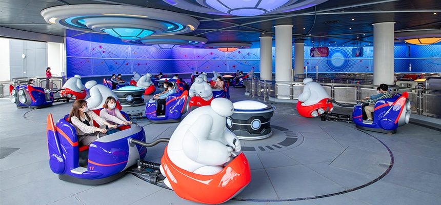

シーはここまで
シーから、
にする？
押すと決定。残ったランドは2日目に。
写真・イベント情報は東京ディズニーリゾート公式サイト（tokyodisneyresort.jp）より。権利は各権利者に帰属します。混雑予想はパークログの実測からの見込みで当日の保証ではありません。2026-09-11時点。
シー ④ ごはん
予約できる
ディナーが6軒
- マゼランズ黄金のドームと回転地球儀コース ¥8,000〜
- S.S.コロンビア豪華客船のダイニングコース ¥7,000〜
- カナレット運河沿いのイタリアンセット ¥4,200〜
- テディ・ルーズヴェルト客船のラウンジ¥1,600〜2,800
- レストラン櫻ニューヨークの和食¥700〜3,000
- ホライズンベイヨットクラブ改装¥350〜2,380
予約解禁は11/17 10:00（ユウキが張り付く）
シー ③ この日のイベント
25周年の
お祝い中
- 125周年“スパークリング・ジュビリー”2027/3/31まで開催中
- 2ディズニー・クリスマスハーバーのクリスマス・グリーティング（15分×2回）、ジュビリーブルーのツリー
- 3夜は花火「スターブライト・クリスマス」ゴンドラの夜景も
- 混雑予想
- 50分平均待ち・アプリ予想
- 営業
- 9–2112/17(木)
- チケット
- ¥10,900大人1人
シー ② 目玉
ラプンツェルは
シーだけ
- 1ラプンツェルのランタンフェスティバル並んで乗れる。急ぐならプレミアアクセス¥2,000/回
- 2アナとエルサのフローズンジャーニー同じ新エリア。待ちは長め、¥2,500で確実に
- 3ソアリン／トイ・ストーリー・マニア！朝いちで押さえたい定番


シー ①

東京
ディズニーシー
大人っぽい景色と、おしゃれなごはん。上にスライドすると理由が出ます。
シー？
ランド？
↑上にスライドでシーラプンツェル・25周年
↓下にスライドでランドクリスマスのパレード
両方行くつもり。12/17をどっちからにするか、ゆりやが決めてください。残った方は2日目に。
ランド ①

東京
ディズニーランド
クリスマスのど真ん中。下にスライドすると理由が出ます。
ランド ② 目玉
クリスマスの
パレードが2本
- 1トイズ・ワンダラス・クリスマス！昼のパレード、45分×1回
- 2クリスマス版エレクトリカルパレード夜、45分×1回。そのあと花火
- 3美女と野獣“魔法のものがたり”¥2,500で確実に。プーさん、ベイマックスも


ランド ③ この日のイベント
王道の
クリスマス
- 1ワールドバザールの大きなクリスマスツリー入ってすぐ。エントランスにはパレードのデコレーションが初登場
- 2ジョリーフード・プラザシンデレラ城前に初登場の食べ歩き広場
- 3ホーンテッドマンション“ホリデーナイトメアー”ナイトメアー版で運営中
- 混雑予想
- 24分平均待ち・アプリ予想
- 営業
- 9–2112/17(木)
- チケット
- ¥10,900大人1人
ランド ④ ごはん
予約できる
ディナーは5軒
- ブルーバイユー蛍とランタンの入り江コース ¥7,000〜7,500
- クリスタルパレスガラスドームのブッフェ¥5,500
- イーストサイド・カフェパスタセット ¥2,800〜4,200
- れすとらん北齋和食¥2,600〜4,200
- センターストリート洋食ダイナー¥580〜3,580

ランドはここまで
ランドから、
にする？
押すと決定。残ったシーは2日目に。
写真・イベント情報は東京ディズニーリゾート公式サイト（tokyodisneyresort.jp）より。権利は各権利者に帰属します。混雑予想はパークログの実測からの見込みで当日の保証ではありません。2026-09-11時点。